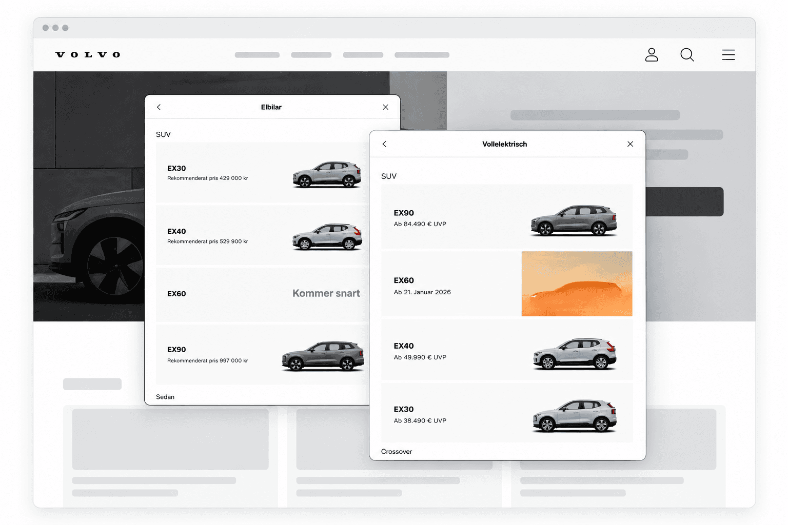
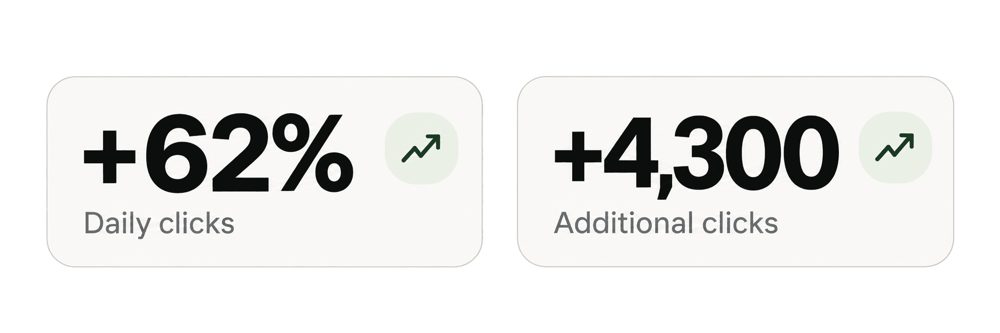

Current information architecture
Mapped and documented the existing information architecture to understand how content was currently structured, labelled and connected across the website.
At Volvo Cars, I worked on improving findability through structured research and data analysis, alongside UI design and exploring how AI could shape future digital experiences. I investigated how customers navigate the website and expect information to be organised, translating insights into actionable recommendations that helped shape a strategy and prioritise future improvements.

Volvo Cars global website had grown into a complex ecosystem of content, products and user journeys across markets. While users came to the site with clear goals, the existing information architecture had evolved around internal structures rather than consistently reflecting how people expected to find information. This created friction in the customer journey: important content was difficult to discover, terminology was inconsistent, and similar information could be surfaced through different paths. The project set out to establish an evidence-based understanding of these gaps and create a foundation for improving how users navigate and find information across Volvo Cars digital experience.
Mapped and documented the existing information architecture to understand how content was currently structured, labelled and connected across the website.
Planned and conducted card-sorting research across multiple markets to understand how users group, categorise and expect to find information.
Prepared and analysed the research data, identifying patterns, mismatches and opportunities across markets.
Shared findings with stakeholders, highlighting critical gaps between user expectations and the current IA.
Worked with the UX lead and Product Manager to shape the strategy and define next steps.
The research created an evidence-based foundation for improving findability across Volvo Cars website. I documented the existing information architecture, processed and analysed extensive card-sorting data in Excel, and used AI to support the analysis and synthesis of research data. I visualised the results through dendrograms and other outputs, making patterns in users’ mental models and gaps in the current structure tangible.
I presented the findings and key mismatches to stakeholders, translating complex research data into clear priorities for a future information architecture. Alongside this, I planned the next stages of the project and contributed to shaping the findability strategy with the UX Lead and Product Manager, helping turn research insights into a direction for future navigation and search improvements.
All data points are fictional and illustrate possible results from a card-sorting analysis.
The existing navigation card for the upcoming EX60 launch was a quick solution that no longer matched the quality of the launch visuals and messaging. It needed a more premium look that captured attention while fitting naturally into Volvo Cars main navigation. The challenge was to improve the design quickly, then understand whether the new version encouraged more people to explore the launch.

Identified opportunities to improve the teaser’s visual hierarchy, imagery and messaging while keeping it consistent with the main navigation.
Updated the cards layout and visual presentation to better reflect the EX60 launch and make the teaser more engaging.
Introduced the redesigned card in a limited rollout and compared click performance with the previous version.
Reviewed initial performance and used the results to support introducing the improved design across additional markets.
The redesigned teaser generated more engagement than the previous version, showing how a focused UI improvement could make a difference without requiring a larger redesign. In this illustrative example, the new card increased average daily clicks by around 40%, generating approximately 800 additional clicks over one week. The positive early results supported the decision to roll out the updated design more broadly.
The project demonstrated the value of combining rapid UI iteration with lightweight and quick testing — using evidence to guide design decisions rather than relying on visual judgement alone.

The data points are fictional